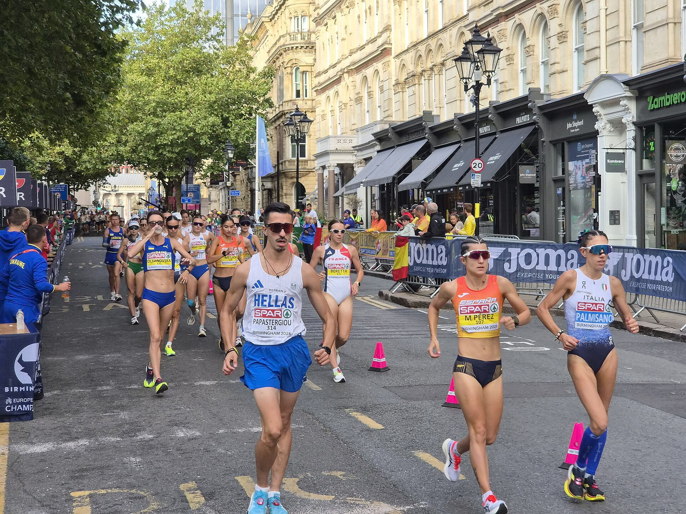

O Campeonato Europeu de Atletismo de 2026 entregou uma edição que vai permanecer relevante muito além dos resultados imediatos. Realizada entre 10 e 16 de agosto no Alexander Stadium, em Birmingham, a competição marcou a primeira vez em que o Reino Unido recebeu o campeonato e reuniu acontecimentos importantes tanto nas provas de pista e campo quanto nas disputas de rua.
Houve recordes mundiais, recorde europeu, uma série de recordes do campeonato e performances que entraram nas listas históricas do atletismo. A edição também introduziu uma nova configuração para a marcha atlética e estreou o revezamento 4x100m misto no programa do Europeu, ajudando a transformar Birmingham 2026 em um ponto de referência para futuras comparações.
Marca histórica de quatro medalhas de ouro
Poucos atletas deixaram uma marca tão forte no Europeu de 2026 quanto Amy Hunt. A britânica venceu os 100m em 11s00 e depois completou a dobradinha individual dos sprints ao conquistar os 200m em 22s19.
A campanha ganhou dimensão ainda maior nos revezamentos. Hunt integrou a equipe campeã do 4x100m feminino e, no encerramento, também participou da vitória britânica no primeiro 4x100m misto da história do Campeonato Europeu.
Com isso, terminou Birmingham com quatro ouros — 100m, 200m, 4x100m feminino e 4x100m misto — e se tornou a primeira atleta da história do Campeonato Europeu de Atletismo a ganhar quatro medalhas de ouro em uma única edição.
O triunfo no revezamento misto ainda veio acompanhado de um recorde europeu. A Grã-Bretanha completou a prova em 39s97 na estreia da modalidade no programa continental.
Entre os homens, o título dos 100m também ficou com os anfitriões. Romell Glave venceu a final em 10s09, enquanto Matthew Hudson-Smith confirmou sua força nos 400m ao conquistar o terceiro título europeu da carreira na distância, com 44s17.
Warholm derruba o próprio recorde do Europeu
Karsten Warholm produziu uma das maiores marcas da semana nos 400m com barreiras. O norueguês venceu em 46s63 e conquistou o quarto título europeu consecutivo da prova.
Mais do que o ouro, o tempo representou um novo recorde do Campeonato Europeu. Warholm retirou 35 centésimos da marca de 46s98 que ele próprio havia estabelecido em Roma 2024.
O norueguês ainda participou da vitória de seu país no 4x400m misto, no qual a equipe da Noruega registrou 3min09s62, também recorde do campeonato.
No feminino dos 400m rasos, Henriette Jæger também colocou a Noruega no topo do pódio. Ela venceu em 49s04, estabelecendo recorde nacional.
Final dos 800m com recorde
Uma das finais mais aguardadas aconteceu nos 800m feminino. A suíça Audrey Werro derrotou um campo que incluía a britânica Keely Hodgkinson e conquistou o título com 1min54s81.
O tempo foi recorde do Campeonato Europeu e reforçou a ascensão de Werro entre os principais nomes mundiais da distância.
Nos masculino, Mark English também escreveu uma página importante. O irlandês correu 1min43s49 na semifinal e derrubou um recorde do campeonato que permanecia intacto havia 48 anos: os 1min43s84 de Olaf Beyer, registrados em Praga em 1978. English depois conquistou o ouro na final.
Ingebrigtsen e Battocletti ampliam coleções de títulos
Jakob Ingebrigtsen voltou a mostrar por que possui uma relação especial com os Campeonatos Europeus. O norueguês venceu os 5000m em 13min15s29 e chegou ao quarto título continental consecutivo na distância.
Entre as mulheres, Nadia Battocletti repetiu um feito que já havia conseguido em Roma 2024. Depois do ouro nos 5000m, a italiana venceu também os 10.000m, desta vez em 31min41s18.
Com isso, Battocletti se tornou a primeira mulher a completar a dobradinha 5000m/10.000m em duas edições consecutivas.
Recorde batido após quase 50 anos
Nos 10.000m masculino apareceu outra das grandes marcas de Birmingham. Andreas Almgren venceu em 27min23s44 e quebrou o recorde mais antigo do Campeonato Europeu que ainda permanecia em vigor.
A referência anterior era de 27min30s99, registrada pelo finlandês Martti Vainio em 1978. Depois de quase meio século, Almgren reduziu a marca em mais de sete segundos.
Mondo conquista mais um ouro e estabelece recorde do campeonato
Armand Duplantis não precisou quebrar o recorde mundial para deixar sua marca em Birmingham. O sueco venceu o salto com vara e chegou a 6,15m, novo recorde do Campeonato Europeu.
Duplantis passou por 6,10m e 6,15m na primeira tentativa e encerrou sua participação depois de garantir mais um título continental.
Nos saltos horizontais, Miltiadis Tentoglou manteve seu domínio do salto em distância masculino. O grego venceu com 8,44m, mesmo enfrentando vento contrário, e conquistou o quarto título europeu consecutivo.
No feminino, Larissa Iapichino chegou aos 7,00m para conquistar seu primeiro ouro em um Europeu outdoor.
Marca de 18,15m no salto triplo
Se Duplantis dominou o salto com vara, Andy Díaz Hernández produziu uma das performances tecnicamente mais impactantes de todo o campeonato.
O italiano alcançou 18,15m no salto triplo masculino. A marca foi a melhor do mundo na temporada e, de acordo com a European Athletics, correspondeu ao quarto salto mais longo da história da prova.
A performance ajudou diretamente a campanha italiana que terminaria no topo do quadro de medalhas.
Čeh e Weber reescrevem os recordes dos lançamentos
Kristjan Čeh defendeu seu título europeu no lançamento do disco com 72,51m. O esloveno estabeleceu novo recorde do campeonato em uma final na qual a antiga marca chegou a ser superada mais de uma vez durante a disputa.
No lançamento do dardo, Julian Weber esperou até a sexta rodada para produzir o grande golpe da final. O alemão lançou 90,40m, superou o antigo recorde de 89,72m de Steve Backley e tornou-se o primeiro atleta a ultrapassar a barreira dos 90 metros em uma edição do Campeonato Europeu.
No arremesso do peso masculino, Leonardo Fabbri também confirmou o favoritismo. O italiano defendeu o título conquistado em 2024 com 22,31m.
Maratonas terminam com dois recordes
Birmingham também produziu novas referências nas provas de resistência
Alisa Vainio venceu a prova feminina em 2h22min26s, quebrando o recorde do Campeonato Europeu.
Entre os homens, o alemão Amanal Petros conquistou seu primeiro grande título internacional ao completar os 42,195 km em 2h09min11s, igualmente recorde do campeonato.
Marcha atlética produz recordes mundiais
Foi na prova que apareceram os recordes mundiais mais relevantes de Birmingham 2026.
A competição marcou uma mudança importante no programa continental. As tradicionais distâncias de 20 km e 35 km deram lugar às provas disputadas sobre as distâncias da meia maratona e da maratona. O Europeu também foi um dos primeiros grandes palcos internacionais desse novo formato.
Na meia maratona feminina da marcha, María Pérez venceu em 1h30min06s, marca reconhecida como recorde mundial inaugural da distância. No masculino, o espanhol Paul McGrath ganhou em 1h23min23s.
Na distância equivalente à maratona, Sofia Fiorini estabeleceu outro recorde mundial, com 3h15min11s. A italiana completou uma dobradinha de seu país, já que Massimo Stano venceu a prova masculina com 2h56min49s, recorde europeu.
Como as distâncias fazem parte da reformulação recente da marcha atlética, essas marcas precisam ser entendidas dentro do contexto do novo programa. Ainda assim, Birmingham 2026 passa a ocupar uma posição central na história estatística dessas provas.
As provas combinadas
No decatlo, Leo Neugebauer confirmou o favoritismo com 8.611 pontos e conquistou o título europeu.
No heptatlo, Kate O'Connor garantiu o ouro para a Irlanda com 6.751 pontos. A pontuação também representou recorde irlandês, enquanto Emma Oosterwegel ficou com a prata e Sofie Dokter com o bronze.
Todos os campeões do Europeu de Atletismo 2026
O meeting de Birmingham reuniu títulos em 50 provas do programa principal, divididas entre masculino, feminino e revezamentos mistos. A lista completa dos vencedores ajuda a dimensionar a variedade de protagonistas da edição, que teve desde nomes consagrados, como Armand Duplantis, Karsten Warholm e Jakob Ingebrigtsen, até campeões inéditos em grandes provas continentais.
Campeões do masculino
- 100m — Romell Glave (Grã-Bretanha e Irlanda do Norte)
- 200m — Owen Ansah (Alemanha)
- 400m — Matthew Hudson-Smith (Grã-Bretanha e Irlanda do Norte)
- 800m — Mark English (Irlanda)
- 1500m — Stefan Nillessen (Países Baixos)
- 5000m — Jakob Ingebrigtsen (Noruega)
- 10.000m — Andreas Almgren (Suécia)
- Maratona — Amanal Petros (Alemanha)
- 110m com barreiras — Jason Joseph (Suíça)
- 400m com barreiras — Karsten Warholm (Noruega)
- 3000m com obstáculos — Frederik Ruppert (Alemanha)
- Marcha atlética de meia maratona — Paul McGrath (Espanha)
- Marcha atlética de maratona — Massimo Stano (Itália)
- Salto em altura — Gianmarco Tamberi (Itália)
- Salto com vara — Armand Duplantis (Suécia)
- Salto em distância — Miltiadis Tentoglou (Grécia)
- Salto triplo — Andy Díaz Hernández (Itália)
- Arremesso do peso — Leonardo Fabbri (Itália)
- Lançamento do disco — Kristjan Čeh (Eslovênia)
- Lançamento do dardo — Julian Weber (Alemanha)
- Lançamento do martelo — Bence Halász (Hungria)
- Decatlo — Leo Neugebauer (Alemanha)
- 4x100m — Grã-Bretanha e Irlanda do Norte
- 4x400m — Itália
Campeãs do feminino
- 100m — Amy Hunt (Grã-Bretanha e Irlanda do Norte)
- 200m — Amy Hunt (Grã-Bretanha e Irlanda do Norte)
- 400m — Henriette Jæger (Noruega)
- 800m — Audrey Werro (Suíça)
- 1500m — Georgia Hunter Bell (Grã-Bretanha e Irlanda do Norte)
- 5000m — Nadia Battocletti (Itália)
- 10.000m — Nadia Battocletti (Itália)
- Maratona — Alisa Vainio (Finlândia)
- 100m com barreiras — Nadine Visser (Países Baixos)
- 400m com barreiras — Emma Zapletalová (Eslováquia)
- 3000m com obstáculos — Gesa Felicitas Krause (Alemanha)
- Marcha atlética de meia maratona — María Pérez (Espanha)
- Marcha atlética de maratona — Sofia Fiorini (Itália)
- Salto em altura — Yaroslava Mahuchikh (Ucrânia)
- Salto com vara — Angelica Moser (Suíça)
- Salto em distância — Larissa Iapichino (Itália)
- Salto triplo — Dariya Derkach (Itália)
- Arremesso do peso — Jessica Schilder (Países Baixos)
- Lançamento do disco — Jorinde van Klinken (Países Baixos)
- Lançamento do dardo — Sara Kolak (Croácia)
- Lançamento do martelo — Silja Kosonen (Finlândia)
- Heptatlo — Kate O'Connor (Irlanda)
- 4x100m — Grã-Bretanha e Irlanda do Norte
- 4x400m — Países Baixos
Campeões das provas mistas
- 4x100m misto — Grã-Bretanha e Irlanda do Norte
- 4x400m misto — Noruega
A maratona também teve classificação por equipes com distribuição de medalhas. Israel ficou com o ouro masculino, enquanto a Grã-Bretanha e Irlanda do Norte venceu a disputa feminina por equipes.
O quadro de medalhas
A definição da principal seleção do campeonato só veio no encerramento. A Itália conquistou o 4x400m masculino na última prova do programa e ultrapassou os anfitriões no quadro final de medalhas.
A classificação final das primeiras posições, ordenada pelo número de ouros, ficou assim:
- Itália — 10 ouros, 6 pratas, 6 bronzes — 22 medalhas
- Grã-Bretanha e Irlanda do Norte — 9 ouros, 8 pratas, 2 bronzes — 19
- Alemanha — 6 ouros, 10 pratas, 5 bronzes — 21
- Países Baixos — 5 ouros, 3 pratas, 6 bronzes — 14
- Noruega — 4 ouros, 0 pratas, 2 bronzes — 6
- Suíça — 3 ouros, 3 pratas, 1 bronze — 7
O resultado manteve a Itália no topo continental depois de a seleção também ter liderado o quadro de medalhas no Europeu de Roma 2024.
Europeu de Atletismo 2026 entra para a história
O peso de Birmingham não está apenas nos campeões. O campeonato reuniu diferentes tipos de feitos históricos.
Amy Hunt estabeleceu um recorde de quatro títulos na mesma edição. Warholm chegou ao quarto ouro consecutivo dos 400m com barreiras. Ingebrigtsen conquistou o quarto título dos 5000m. Battocletti repetiu a dobradinha 5000m/10.000m. Duplantis elevou o recorde continental do campeonato no salto com vara. Almgren apagou uma marca que sobrevivia desde 1978. Čeh e Weber levaram os lançamentos a patamares inéditos dentro da competição.
Ao mesmo tempo, Birmingham abriu uma nova página estatística com as distâncias reformuladas da marcha atlética e com a estreia do 4x100m misto, imediatamente marcado por um recorde europeu britânico.
Por isso, o Europeu de Atletismo de 2026 tende a continuar relevante quando futuras edições forem comparadas. Birmingham não foi apenas o campeonato em que a Itália terminou na frente ou em que os donos da casa empilharam ouros. Foi uma edição em que recordes antigos caíram, novas provas começaram a construir sua própria história e alguns dos principais nomes do atletismo europeu ampliaram legados que ainda estão em curso.